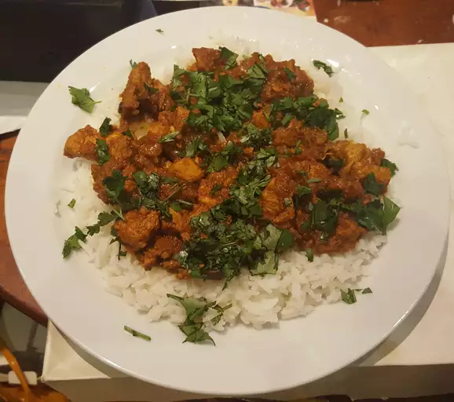

Chicken Madras

Description
Chicken madras is a classic Indian curry made with a combination of fragrant spices.
It has so much flavor and smells delicious. You can make this curry in the morning
and leave it to infuse throughout the day to make it even more delicious.
Ingredients
- 5 tablespoons cooking oil
- 3 whole cloves
- 2 cardamom pods
- 2 large onions, finely chopped
- 3 green chilli peppers, with seeds, chopped
- 4 cloves garlic, crushed
- 1 (1 inch) piece ginger, minced
- 1 teaspoon ground red chili pepper
- 1 teaspoon ground turmeric
- ½ teaspoon ground cumin
- ½ teaspoon ground coriander
- salt to taste
- 1 ½ pounds skinless, boneless chicken breasts, cut into bite-sized pieces
- ¼ cup water
- ½ (14 ounce) can tomato puree
- 1 teaspoon ground nutmeg
- 1 teaspoon garam masala
- ½ cup chopped fresh cilantro
Steps
- Heat oil in a large nonstick pan over medium heat. Add cloves and cardamom pods,
and wait until they sizzle, about 1 minute.
- Add onions and sauté until dark brown, 7 to 10 minutes.
- Then add chilli peppers, garlic, and ginger. Cook and stir until fragrant,
about 30 seconds.
- Add ground chilli pepper, turmeric, cumin, coriander, and salt. Cook, stirring
frequently, until blended in, about 1 minute more.
- Stir in chicken and water; cook, stirring constantly, until water is incorporated,
2 to 3 minutes. Stir in tomato puree and nutmeg. Cover and cook until chicken is
no longer pink in the center and the juices run clear, about 20 minutes.
- Ladle into bowls and sprinkle garam masala over top. Garnish with cilantro.
Home